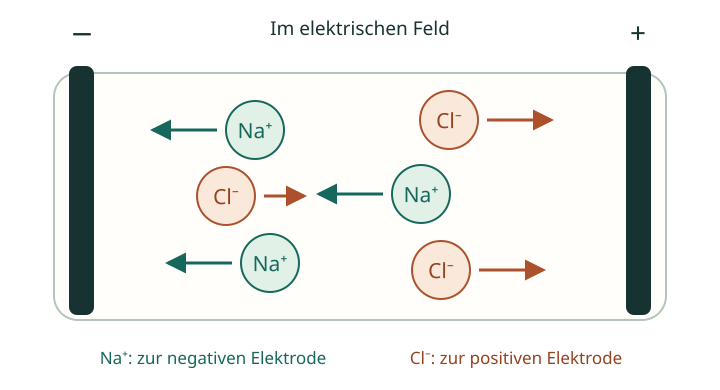

Deine Checkliste. Dein nächster Lernschritt.
Chemie verstehen.
Gezielt vorbereiten.
Hier findest du Erklärungen und Übungen zu deiner Checkliste. Wähle genau die Inhalte aus, bei denen du noch Unterstützung brauchst.

Deine Unterrichtsreihe
Passend zur ChecklisteKonduktometrie
Von der Leitfähigkeit wässriger Lösungen zur Auswertung von Titrationen.
So nutzt du das Material
Punkt auswählen
Die Nummern stimmen mit deiner Checkliste überein. 1.2 bedeutet: Bereich 1, zweiter Punkt.
Passende Hilfe nutzen
Infomaterial erklärt die Grundlagen. Übungen geben dir Gelegenheit, dein Wissen anzuwenden.
Lernstand prüfen
Gehe zurück zur Checkliste. Kannst du den Punkt jetzt selbstständig erklären oder bearbeiten?